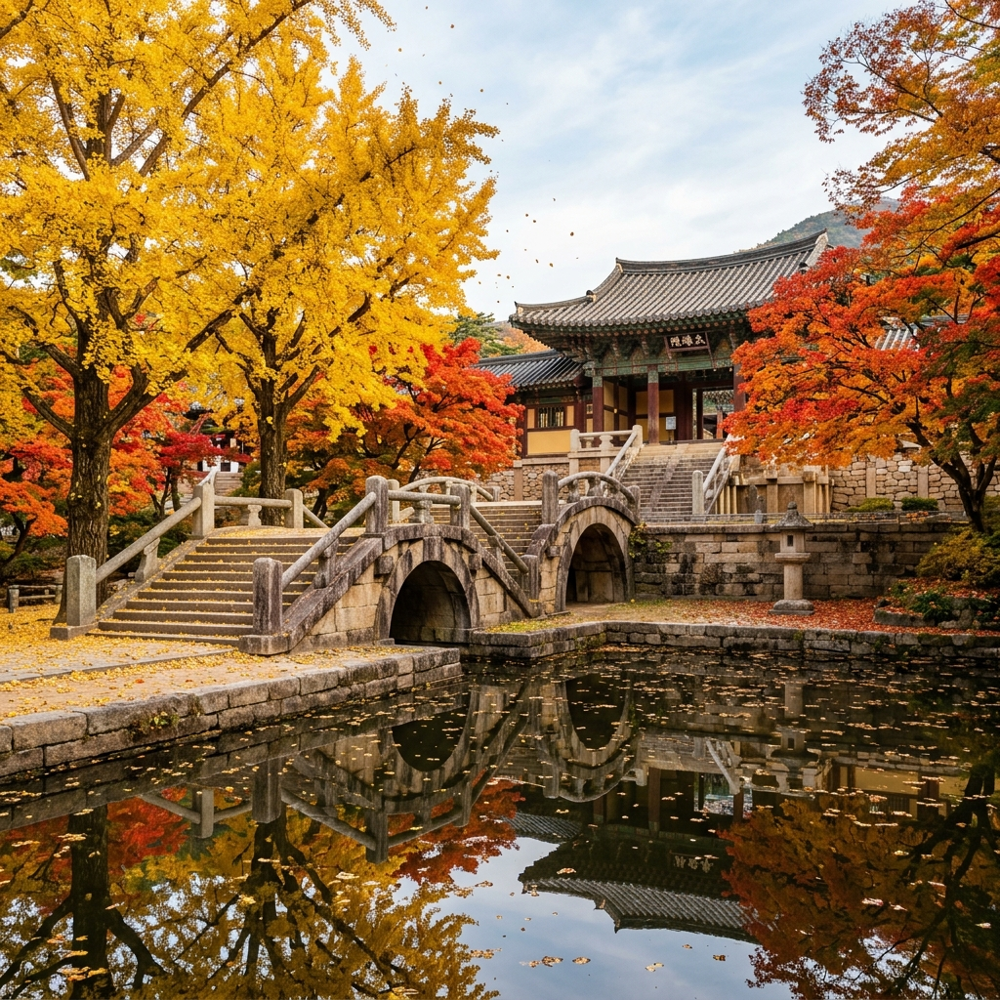
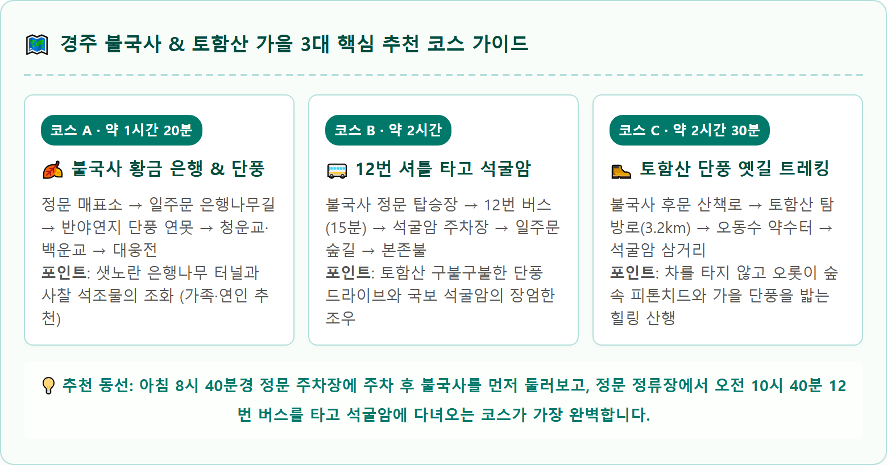

경주 불국사 가을 은행나무와 단풍 언제 절정인가 — 토함산 석굴암 셔틀 연계와 주차 요금 비교
천년 고도 경주의 가을을 대표하는 불국사 은행나무 황금 터널과 반야연지 단풍은 10월 하순부터 11월 초순에 절정을 이룹니다.
유네스코 세계문화유산인 불국사는 고즈넉한 화강암 석축(청운교·백운교)과 오색 단풍, 일주문 앞을 황금빛으로 물들이는 수백 년 된 거대한 은행나무 거목들이 어우러져 장관을 연출합니다. 문화재관람료 전면 폐지로 불국사와 석굴암 모두 무료입장이 가능해진 만큼, 토함산 정상 석굴암까지 이어지는 12번 시내버스 셔틀 이용법과 정문·후문 주차장 선택 요령을 완벽하게 정리했습니다.

불국사 청운교·백운교 앞을 황금빛과 붉은빛으로 물들인 가을 은행나무와 단풍 / AI 제작 이미지
01 | 천년 신라의 가을 정취, 불국사 단풍과 황금빛 은행나무의 조화
경주시 진현동 토함산 서쪽 기슭에 자리한 불국사는 신라 경덕왕 10년(751년) 김대성의 발원으로 중창된 한국 불교 예술의 최고 정점입니다.
봄철 겹벚꽃의 화려함으로 유명한 불국사이지만, 가을이 찾아오면 고풍스러운 신라의 석조 건축물과 어우러지는 단풍의 운치는 그 깊이가 남다릅니다.
불국사 가을의 백미는 정문 일주문에서 천왕문으로 이어지는 산책로 변에 우뚝 솟은 수령 수백 년의 은행나무 거목들입니다.
10월 하순이 되면 샛노랗게 물든 은행잎들이 융단처럼 바닥에 깔리고, 바람이 불 때마다 노란 낙엽 비가 쏟아져 내리며 관광객들의 탄성을 자아냅니다.
여기에 반야연지 연못을 둘러싼 당단풍과 단풍나무가 붉게 타오르며 극락전과 대웅전 뒤편의 고요한 기와지붕과 완벽한 색채의 조화를 이룹니다.
02 | 2026 경주 불국사 단풍 & 은행나무 절정 시기 예측
경주 지역은 내륙성 기후의 특성상 일교차가 커 단풍의 색감이 선명하게 발색됩니다.
기상 관측 데이터에 기반한 2026년 불국사 및 토함산 일원의 가을 단풍 캘린더는 다음과 같습니다.
🍂 2026 불국사 & 토함산 가을 식생 절정 일정표
• 토함산 상부 능선 및 석굴암 일대: 10월 22일 ~ 10월 28일 (고지대 단풍 먼저 절정)
• 불국사 일주문 은행나무 황금 터널: 10월 27일 ~ 11월 5일 (황금빛 낙엽 융단 형성)
• 반야연지 및 불국사 경내 아기단풍: 10월 30일 ~ 11월 10일 (붉은 단풍잎 절정)
• 관람 추천 골든아워: 오전 08:30 ~ 10:30 (관광버스 도착 전, 아침 사광을 받는 은행잎 촬영 최적기)
03 | 입장료 무료 전환 및 불국사 운영 시간 안내
국립공원 및 조계종 주요 사찰의 문화재관람료 감면 사업이 전면 정착됨에 따라, 과거 성인 6,000원을 징수하던 불국사와 석굴암은 현재 전 국민 무료입장이 적용됩니다.
별도의 매표 절차 없이 정문 또는 후문 검표대를 통해 자유롭게 입장하시면 됩니다.
| 시설 구분 |
운영 시간 |
입장 요금 |
비고 |
| 불국사 경내 |
매일 07:00 ~ 18:00 (입장 마감 17:00) |
전면 무료 |
연중무휴 상시 개방 |
| 석굴암 석굴 |
매일 09:00 ~ 17:30 (입장 마감 17:00) |
전면 무료 |
유리벽 너머 석굴 본존불 관람 |
| 불국사 박물관 |
09:00 ~ 17:00 (매주 월요일 휴관) |
성인 2,000원 / 청소년 1,000원 |
사찰 내부 성보박물관 유료 |
04 | 정문 주차장 vs 후문 주차장 위치와 요금·진입 팁
불국사에는 방문 목적과 이동 동선에 따라 이용할 수 있는 두 개의 대형 공영주차장이 마련되어 있습니다.
주차 요금은 경주시 시설관리공단에서 위탁 관리하여 매우 저렴하게 정액제로 운영됩니다.
| 주차장 구분 |
위치 및 주요 특징 |
주차 요금 (1일 정액) |
장점 및 단점 |
| 정문 주차장 (불국사 상가지구) |
일주문 앞, 식당가 및 12번 버스 정류장 인접 |
소형 1,000원 / 대형 2,000원 |
장점: 일주문 은행나무길 진입, 석굴암 셔틀 탑승 편리
단점: 가을 성수기 조기 만차 |
| 후문 주차장 (불국사 동편) |
다보탑·대웅전 인접 진입로 |
소형 1,000원 / 대형 2,000원 |
장점: 오르막 계단 없이 평지로 경내 바로 진입 (어르신 추천)
단점: 일주문 은행나무길을 놓칠 수 있음 |

🗺️ 경주 불국사 & 토함산 가을 3대 핵심 추천 코스 가이드 / 인포그래픽 카드
05 | 불국사 ↔ 석굴암 12번 시내버스 셔틀 운행 시간표와 요금
불국사와 석굴암은 같은 토함산 자락에 위치해 있지만, 차량으로 이동 시 구불구불한 산악도로를 따라 약 7.5km를 올라가야 합니다.
주말 단풍철에는 석굴암 산꼭대기 주차장이 협소해 차량 진입이 전면 통제되기도 하므로, 불국사에 차를 두고 12번 시내버스 셔틀을 이용하는 것이 현명합니다.
| 항목 |
상세 내용 |
| 운행 노선 |
불국사 정문 버스정류장 ↔ 석굴암 주차장 (왕복 운행) |
| 운행 요금 |
일반 1,700원 / 청소년 1,300원 / 어린이 800원 (교통카드 가능) |
| 소요 시간 |
편도 약 15분 ~ 20분 소요 (토함산 단풍 드라이브 구간) |
| 배차 간격 |
매시 40분 불국사 출발 / 매시 정각 석굴암 회차 (1시간 간격 운행) |
| 운행 시간표 (불국사 발) |
08:40(첫차), 09:40, 10:40, 11:40, 12:40, 13:40, 14:40, 15:40, 16:40, 17:20(막차) |
| 운행 시간표 (석굴암 발) |
09:00, 10:00, 11:00, 12:00, 13:00, 14:00, 15:00, 16:00, 17:00, 17:40(막차) |
📊 경주 불국사 & 석굴암 나들이 핵심 이용 지표 요약 / 데이터 요약 카드
06 | 반야연지 연못과 다보탑·석가탑 가을 사진 명당
불국사 내부에서 가장 감동적인 가을 뷰를 담을 수 있는 3대 포토존을 안내합니다.
1. 반야연지 연못 둑길: 천왕문을 지나기 전 우측에 자리한 인공 연못 반야연지 주변은 붉은 단풍나무가 가지를 낮게 드리우고 있습니다. 맑은 연못 수면에 비치는 파란 가을 하늘과 붉은 단풍잎의 반영을 수채화처럼 담아낼 수 있습니다.
2. 청운교·백운교 앞 광장: 국보 청운교와 백운교 석축을 정면에서 바라보는 각도로, 좌우로 서 있는 고목 단풍나무 잎이 프레임처럼 건물을 감싸는 웅장한 구도를 만날 수 있습니다.
3. 무설전 뒤편 극락전 돌담길: 대웅전 뒤편 무설전과 관음전으로 오르는 돌계단 주변은 인적이 비교적 드물어, 고즈넉한 신라 돌담과 낙엽을 배경으로 감성적인 인물 사진을 찍기에 제격입니다.
07 | 불국사 토함산 순두부 골목과 보문호수 연계 드라이브
사찰 관람을 마친 후 점심 식사는 불국사 정문 주차장 아래편에 형성된 불국사 토함산 순두부 골목을 추천합니다.
• 맷돌순두부 & 떡갈비: 가마솥에서 매일 아침 직접 콩을 갈아 만든 부드러운 몽글순두부 찌개와 불향 가득한 한우 떡갈비는 쌀쌀한 가을 날씨에 더없이 든든한 한 끼를 제공합니다.
• 보문관광단지 가을 드라이브: 불국사에서 보문단지 방면으로 이어지는 보불로(약 12km)는 은행나무와 벚나무 가로수가 오색 빛깔로 물드는 가을 대표 드라이브 코스입니다. 보문호수 수변 산책로를 걸으며 가을 호수 바람을 쐬고 예쁜 베이커리 카페에서 일정을 마무리해 보세요.
08 | 불국사 & 석굴암 가을 하루 여행 추천 일정표
신라 천년의 향기와 가을 단풍을 온전히 만끽할 수 있는 알찬 당일치기 코스 시간표입니다.
| 시간대 |
일정 및 동선 |
활동 내용 및 추천 팁 |
| 08:30 ~ 09:00 |
불국사 정문 주차장 도착 |
한적한 주차 후 일주문 앞 은행나무 황금길 아침 산책 |
| 09:00 ~ 10:30 |
불국사 경내 관람 |
반야연지 단풍 반영 감상, 청운교·백운교 및 다보탑·석가탑 참배 |
| 10:30 ~ 10:40 |
정문 셔틀 탑승장 이동 |
12번 시내버스 정류장 이동 및 탑승 대기 |
| 10:40 ~ 11:00 |
12번 버스 탑승 및 이동 |
토함산 단풍 드라이브 코스를 감상하며 석굴암 주차장 이동 |
| 11:00 ~ 12:00 |
석굴암 관람 |
일주문 흙길 산책(도보 15분) 후 석굴암 본존불 관람 및 동해 바다 조망 |
| 12:00 ~ 12:20 |
12번 버스로 불국사 복귀 |
석굴암 정류장에서 12:00 회차 버스 타고 불국사 주차장 복귀 |
| 12:30 ~ 14:00 |
불국사 상가 점심 식사 |
토함산 맷돌순두부와 떡갈비 정식으로 따뜻한 점심 |
| 14:00 ~ 16:00 |
보불로 드라이브 & 보문호수 |
보불로 가을길 드라이브 후 보문호수 카페에서 단풍 힐링 |
#경주불국사
#불국사단풍
#불국사은행나무
#경주가을여행
#토함산석굴암
#석굴암셔틀버스
#불국사주차장
#경주단풍명소
#경주가볼만한곳
#세계문화유산